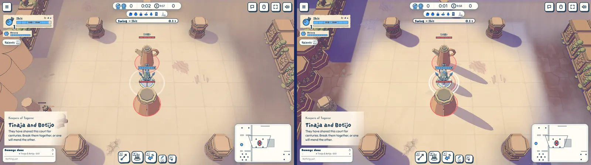
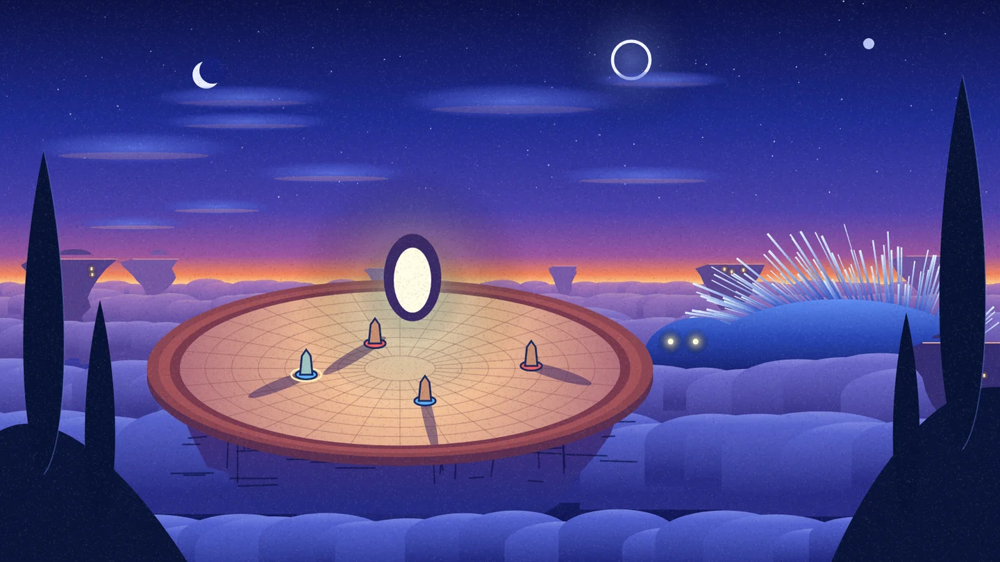
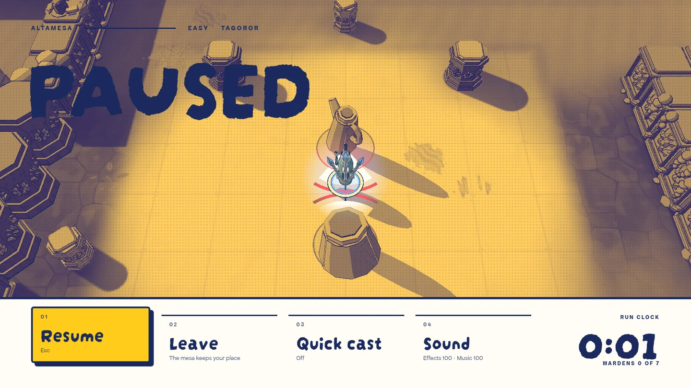

Three quick ideas for the look
To review · 2026-11-15 · thr_qec48wytqx
Which of these three is closest to your taste, and which is wrong? One built frame and two rough sketches, before any deep work.
One thing the inspiration folder says that the game does not yet: those pictures are darker and far more saturated than we are. They run from ultramarine and violet to a flat hard yellow, with real darks under them, while the game lives in the top third of the value scale. All three ideas spend that range.
1. Sight is sunlight

What you can see lies in the sun and what you cannot lies under cloud shadow, so the beige veil is gone and the paving keeps its drawing in the dark. The sun sits low in the west, and everything that stands, walls, pillars, jars and heroes alike, throws one long violet shadow the same way.
Draws on the floating pillars (a lit plate over dark stone), the two game screenshots in the folder (pale tile floors, dark and saturated surrounds) and the flamingos, whose small hard shadows are all that puts them on the ground.
2. The sky goes deep, and the game draws it

The backdrop is drawn by the game instead of pasted behind it: an indigo dusk with one hot seam at the horizon, lens clouds, far mesas with lit windows, and the court as the one warm plate in the frame. Because it is code it can drift, take each map's own hour and palette, and keep a giant asleep in the cloud with its quills up, who opens two small eyes when the Ball drops.
Draws on the six blue dusk paintings in the folder (the quilled creatures, the castle over cloud, the hooded sentinel), the white tower over a cloud sea for the banked cloud, and the ruined gate for warm near and cool far.
3. Pause is a poster

Stopping the match turns the world into a two-ink print, navy on yellow, with only your own hero left in colour and the menu set on a white ground below it like a page from an old game manual. It breaks the rule that gold belongs to the Ball, on purpose, and only while nothing is being fought.
Draws on the flamingos on flat yellow, the lynx under a yellow sky, the girl with the red keyboards and the gridded face on the 1979 annual report.